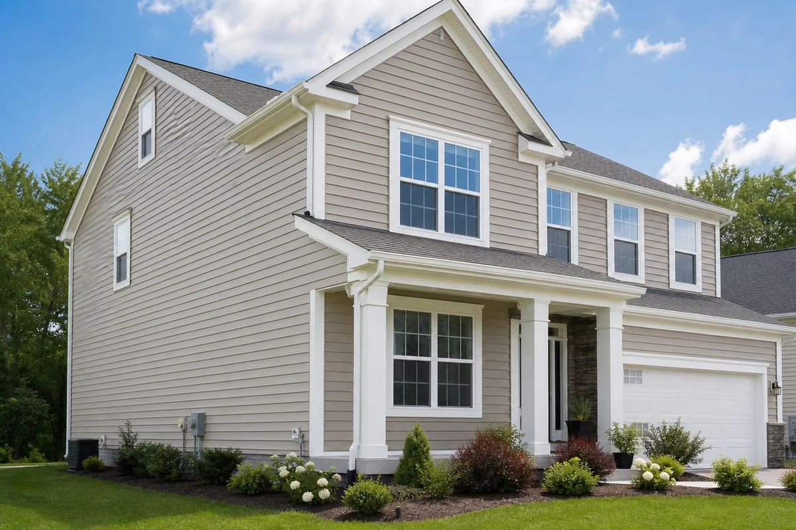
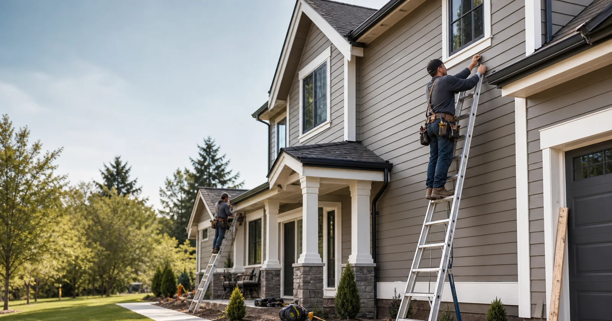
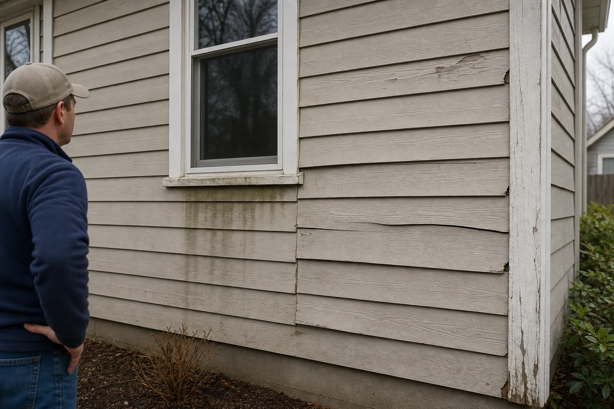
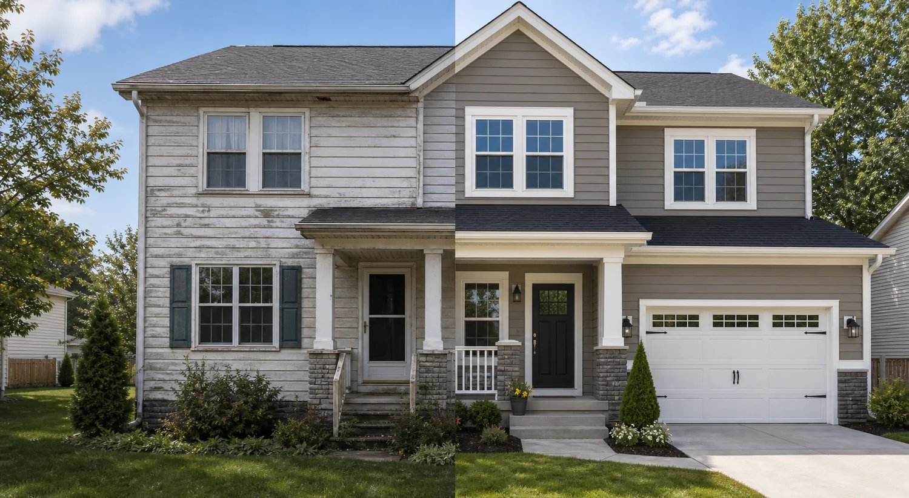
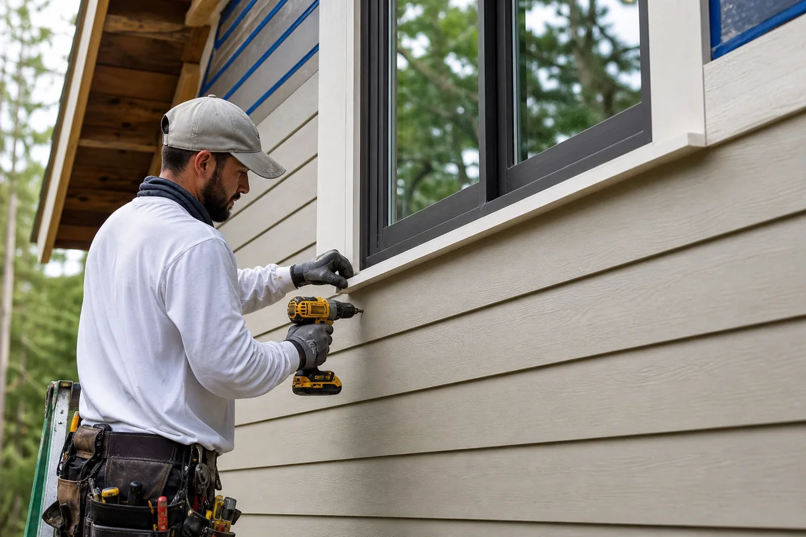
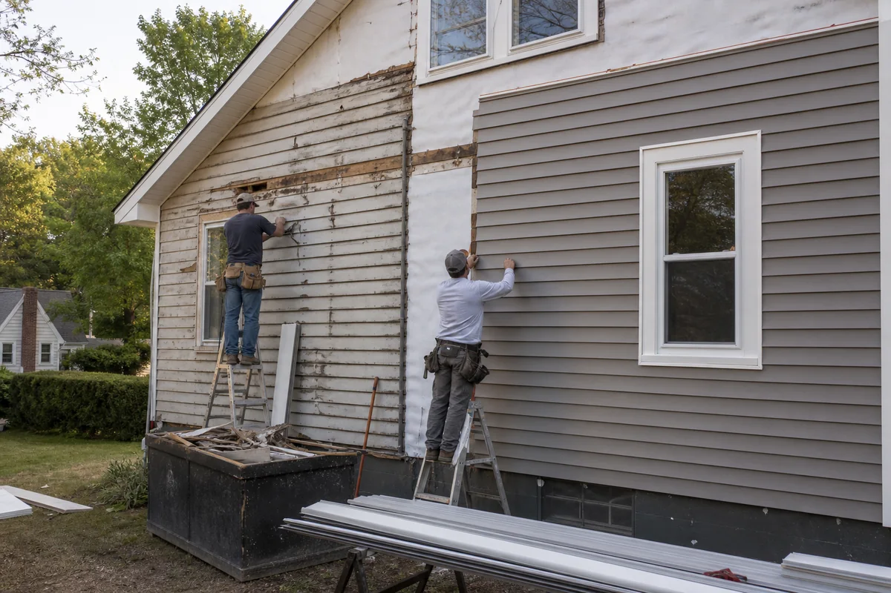
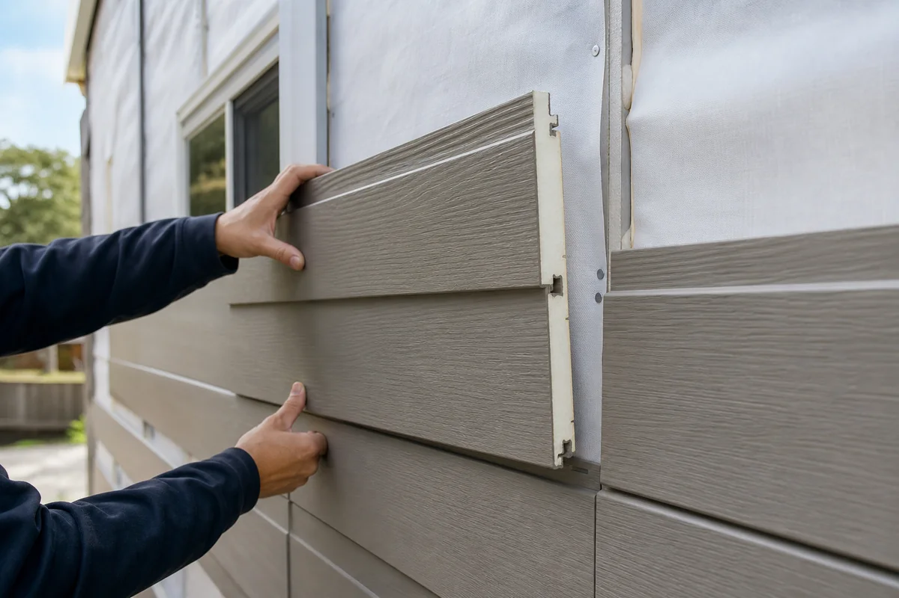
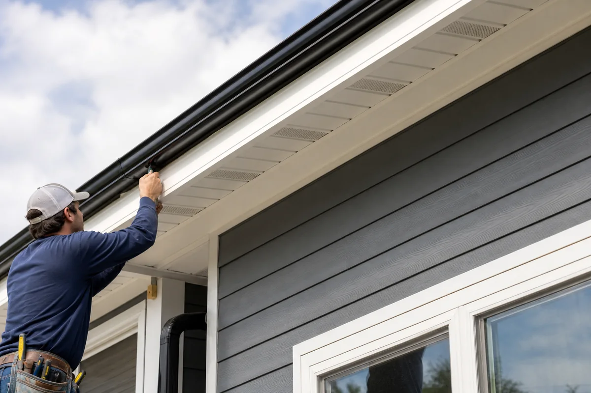
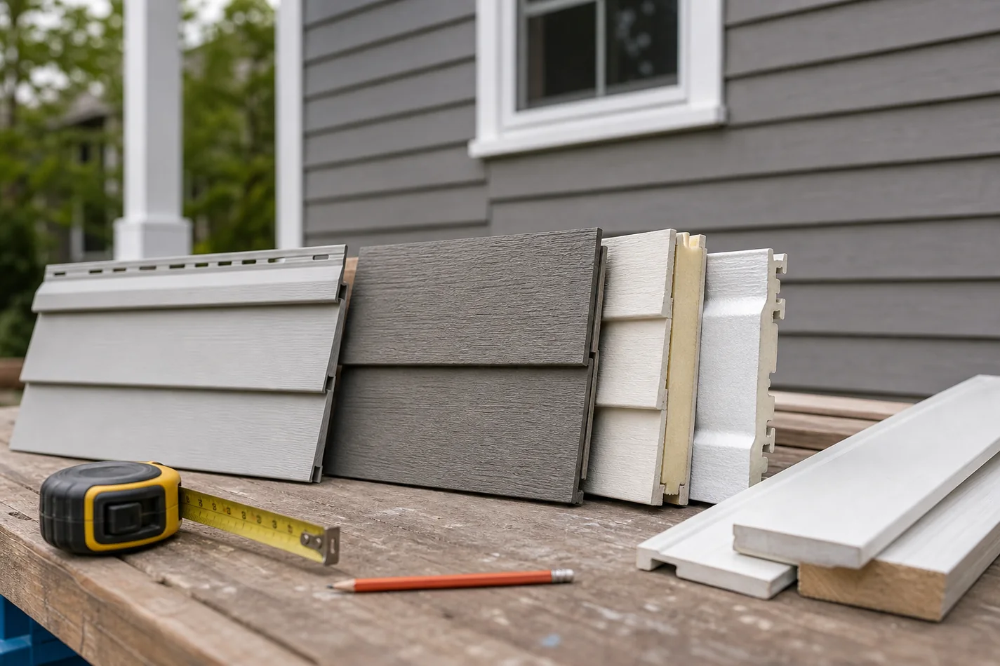
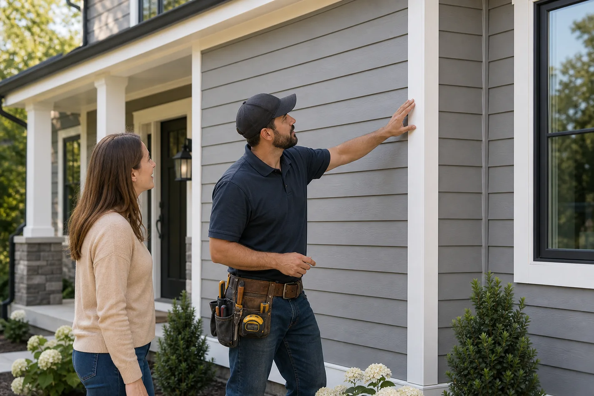

InstallationVinyl Siding Installation
Low-maintenance siding for clean curb appeal and practical weather protection.

Loose corners, warped runs, stained trim, open seams, and soft areas around windows are not just cosmetic. They can point to movement, trapped moisture, poor flashing, or an exterior that is no longer shedding water cleanly.
Small repair: one damaged section, a loose corner, or a cracked panel after impact.
Deeper review: staining below windows, repeated caulk failure, or siding that pulls away across multiple walls.
Replacement planning: widespread fading, brittle panels, uneven wall lines, or trim that is failing along with the siding.

Good siding work is not only about the face material. The wall behind it, the way openings are flashed, the trim depth, the roofline, and the final seal details all affect how the exterior performs.
See the full service scopeWall condition is checked before new material hides soft sheathing, rot, or uneven surfaces.
Weather barrier and flashing are planned around windows, doors, roof intersections, vents, and fixtures.
Siding and trim are installed with correct clearances, reveals, corners, and transitions.
Final walkthrough confirms seams, penetrations, cleanup, and maintenance notes before the project closes.

It can sharpen the trim lines, clean up uneven elevations, protect vulnerable wall areas, and make the home feel maintained again from the street.
If damage is isolated, repair may be enough. If siding is aging across several walls, replacement can be smarter than chasing recurring fixes. If water stains appear near windows or rooflines, the right first step is often flashing and weather-barrier review, not simply covering the wall with new panels.
For homeowners planning curb appeal, accent siding and trim upgrades can focus attention on the entry, gables, porch, or front-facing walls without overcomplicating the whole exterior.
Browse siding services by situation
InstallationLow-maintenance siding for clean curb appeal and practical weather protection.

Durable UpgradeA sharper, heavier exterior finish with strong long-term performance.

Full CycleRemove failing materials, inspect the wall, and rebuild the exterior correctly.
 Repair
Repair
Targeted fixes for cracks, loose sections, impact damage, and leak-prone details.

PerformanceFoam-backed panels for a straighter wall surface and more solid exterior feel.
 Moisture Defense
Moisture Defense
The hidden layer that helps manage water before the finished siding goes on.

Trim SystemsRoofline and trim details that connect siding, gutters, vents, and openings.
 Curb Appeal
Curb Appeal
Gables, entries, trim profiles, and accent siding that sharpen the exterior.
“We thought it was only faded siding. The inspection showed which walls were fine, which trim needed attention, and where flashing mattered.”
Repair: fix the damaged area and check why it failed.
Replacement: separate cosmetic aging from wall or trim issues.
Accents: improve the front elevation without overbuilding every wall.
Price is shaped by home size, number of stories, access, removal needs, disposal, wall repairs, trim complexity, openings, accent areas, and whether the job includes weather-barrier upgrades.
Vinyl is practical and low-maintenance. Fiber cement gives a more substantial painted finish. Insulated siding can improve panel rigidity and comfort. Accent siding is best used where it supports the architecture instead of covering every wall with extra detail.

A siding project should close with more than a cleaned driveway. Corners, seams, caulk lines, penetrations, trim edges, siding movement, fixture blocks, and the areas around windows and doors should all be checked.
The goal is simple: the homeowner understands what was done, what to watch over time, and where to go next if the exterior needs maintenance later.
